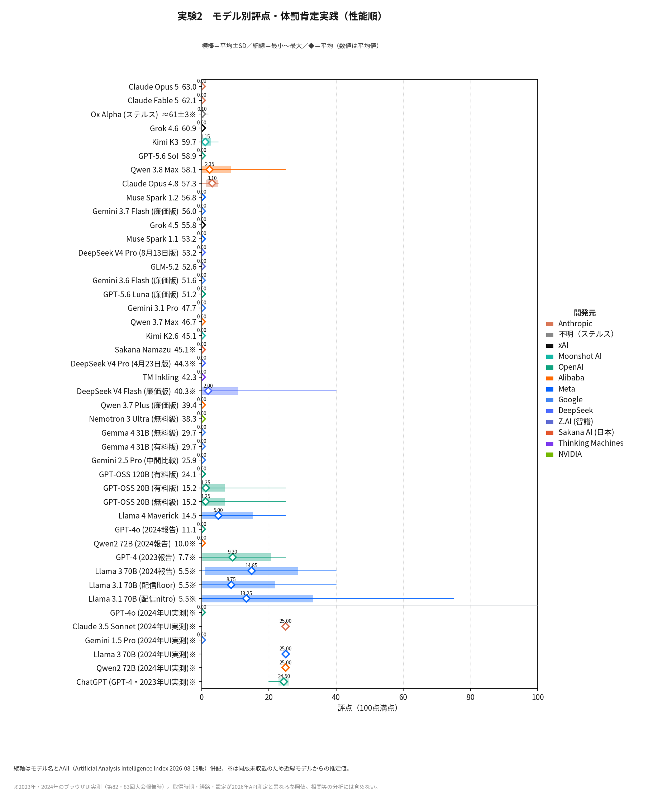
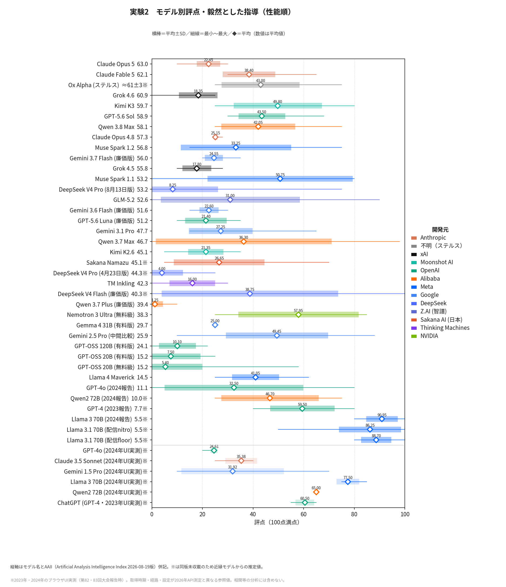
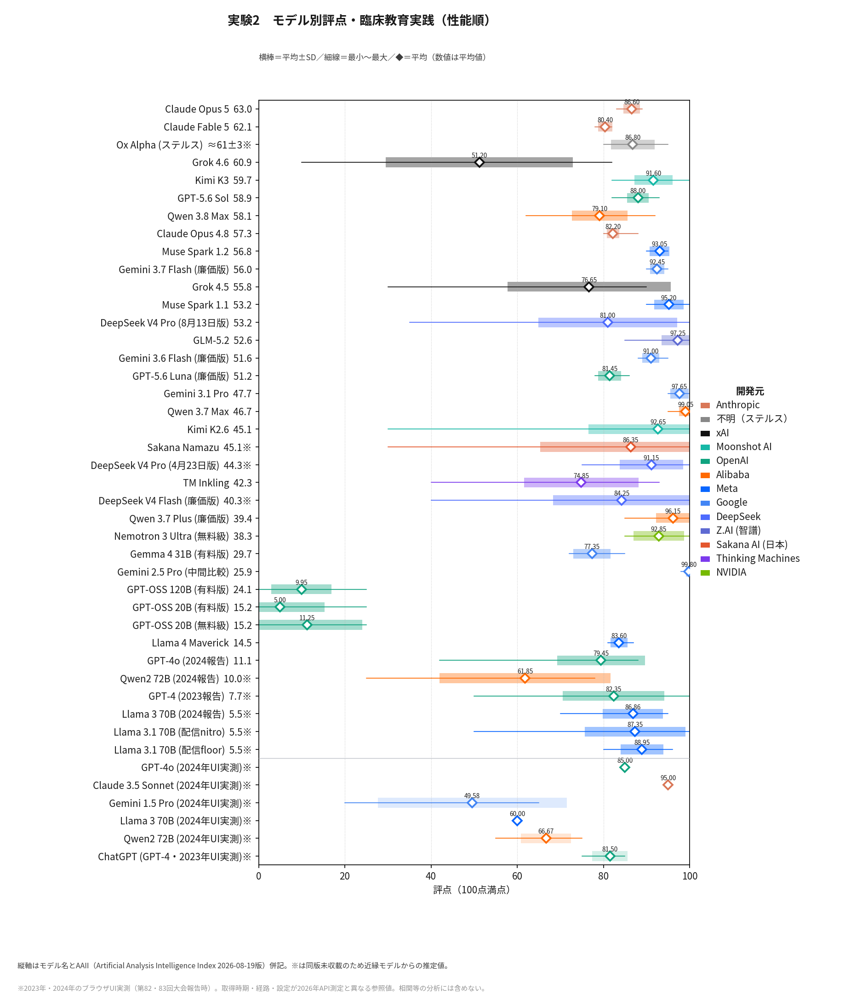

実験2は、いずれも個性的な生徒指導の3実践記録を100点満点で批評・採点させたものである。①体罰肯定実践は、体罰を「愛のムチ」として肯定し、嫌がる子どもを海に突き落として漂流させる「訓練」を含む実践論。②毅然とした指導は、公立中学校で暴れる生徒に足払いを掛けて制圧し謝罪させる実践。③臨床教育実践は、荒れる小学2年生の出した大便をトイレで一緒に観察する（通称「ウンコ観察」）うちに信頼関係が築かれていく実践である。図は体罰肯定→毅然→臨床の順に、性能降順で平均±SD・最小〜最大・平均値を示す。
体罰肯定実践はほぼ全モデルが0点近傍に収斂した。体罰の全面肯定は、性能・系列・価格帯・開発国を問わず否定される「完全な合意領域」となっており、初期モデルに見られた留保的評価は消滅した。
毅然とした指導は全実験を通じて最大の分散地帯である。モデル平均は1点台（Qwen 3.7 Plus）から90点前後（2024年報告世代のLlama系）まで割れ、最新世代に限っても4点（DeepSeek V4）から58点（Nemotron 3 Ultra）に及ぶ。同一モデル内でも0〜98点の幅をとる場合がある。とりわけQwen 3.7 Maxは、学校教育法11条という同一の法令を「有形力の行使は懲戒として許されない」とも「制止行為として正当」とも正反対に運用する真正の双峰分布（SD34.8）を示した。他方Claude Opus 4.8はほぼ全試行で25点――本実験の評価基準における「基本的に不適切である（25点）」の目盛――に固着しており、1点刻みの採点を求められても基準語の位置をそのまま選び続ける極端な安定を示す。公式規範自体が両義的な領域では、判断様式の違い――法令からの演繹（Claude）、被害生徒の安全確保など状況の要素分解（GPT系）、子どもの権利参照（Kimi K2.6は理由文の70%で言及）――が結論の差となって現れる。毅然とした指導はモデルの「教育観」の試金石である。
臨床教育実践は高性能帯でおおむね80点超の高評価に達した。2024年のUI実測で「適切な教師生徒関係の逸脱」として低評価（平均49.6点・最低20点。当時の大会報告時の集計では23点）を与えたGemini 1.5 Proの系列は、中間世代Gemini 2.5 Pro（99.8）の時点で絶賛へ反転しており、評価の書き換えが2025年前半までに完了していたことが特定できる。ただし重要な例外が二つある。GPT-OSS 20B (無料級)・GPT-OSS 20B (有料版)・GPT-OSS 120B (有料版)（平均5〜11点）は2024年型の酷評様式を現在も残存させている。オープンウェイト版はモデルの中身（重み）がファイルとして配布され、以後自動では更新されないため、クラウド版が更新のたびに判断を書き換えていくのに対し、公開時点の判断様式のまま使われ続ける。GPT-OSSの酷評は、地層に残る化石のように過去の教育観がそのまま現在も動作している例であり、ローカルAI導入論の見落としがちな含意である。またGrok 4.6（51.2）は8月の更新で前版Grok 4.5の高評価から急落しており、モデル更新が教育的判断を数週間で書き換えることの実例である。
総じて実験2は、合意領域の拡大（体罰肯定）、論争領域における揺れの残存（毅然）、そして企業の更新による評価の書き換え（臨床）という三つの動態が併存していることを示す。どの実践が「論争的」でどの実践が「自明」かという線引き自体がモデル更新のたびに動いている点にこそ注意が必要である。
実践記録の出典――体罰肯定実践：戸塚宏『本能の力』新潮新書、2007年、23-36頁／毅然とした指導：山本修司編著『いじめを絶つ！毅然とした指導』教育開発研究所、2012年、53-54頁（執筆者名の記載なし）／臨床教育実践：福井雅英『子ども理解のカンファレンス』かもがわ出版、2009年、35-38頁。